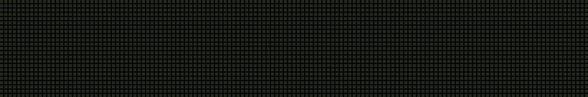

URBS, isso é o que o povo quer!!!
Painel de Próximas Linhas
Uma proposta de letreiro para os pontos de ônibus: mostrar, com clareza, quais linhas estão chegando e em quantos minutos — é isso que o passageiro quer saber assim que chega na parada.
Protótipo com nomes reais de linhas e paradas de Curitiba; os tempos de chegada são fictícios, só para demonstração. O visual do letreiro foi baseado no display do Terminal Portão.
Quando um ônibus chega e o próximo da fila ainda tem 3 minutos ou mais de intervalo, o painel aproveita essa folga para mostrar todas as próximas paradas da linha que chegou e o tempo até cada uma.
Por ser um mock, nem todo caractere tem um desenho pronto na fonte (por exemplo, parênteses) — num painel real, isso seria só uma questão de completar o conjunto de caracteres.
O protótipo também toca um aviso sonoro quando o ônibus chega, para ajudar pessoas com deficiência visual a saberem que a linha delas chegou sem depender só do letreiro.
